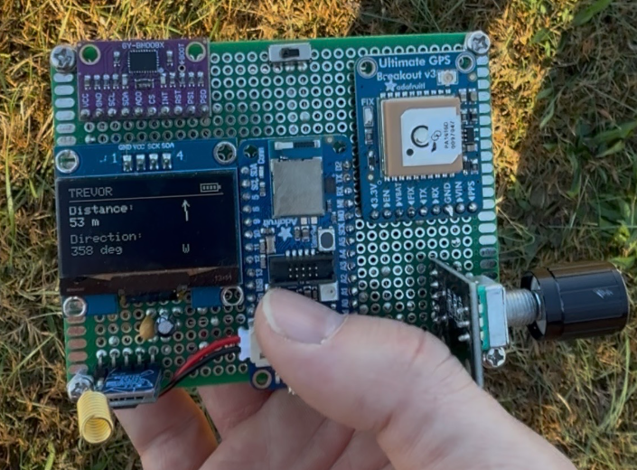
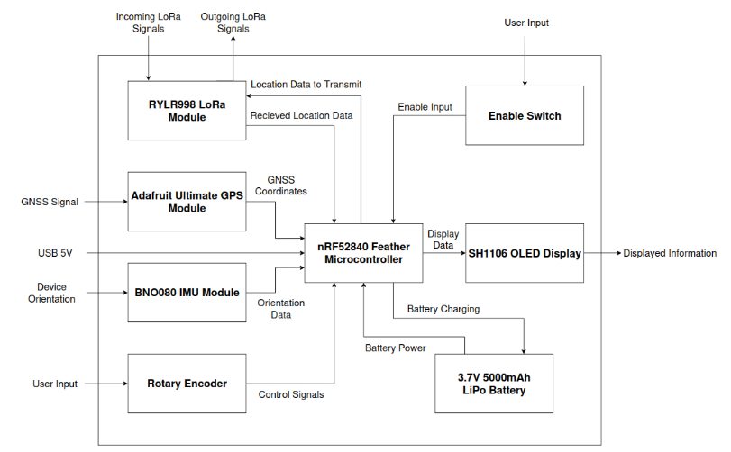
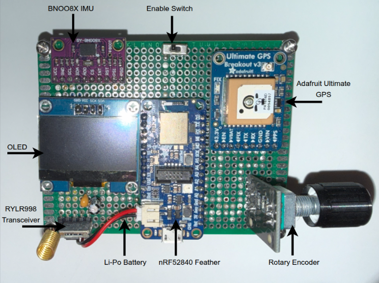
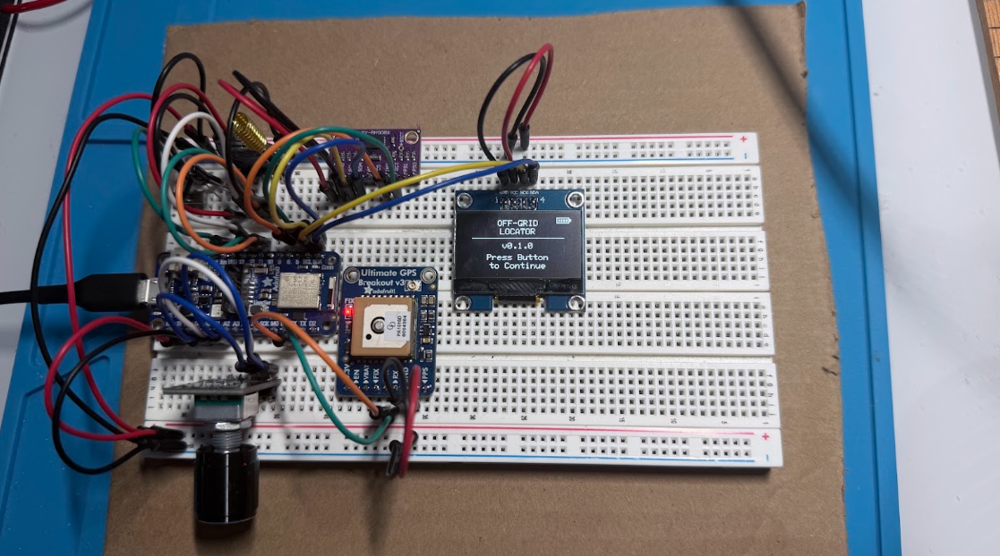
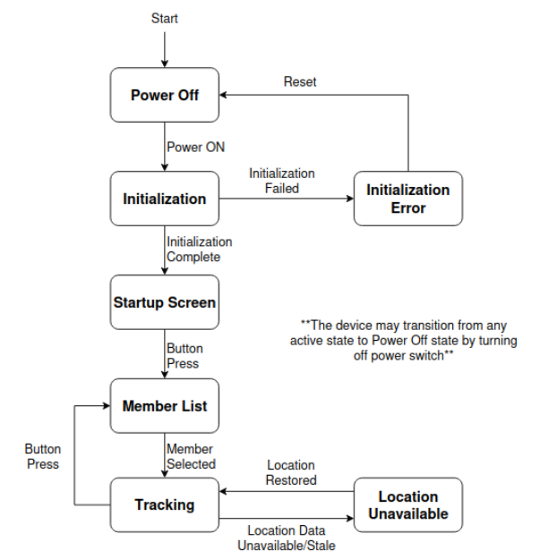
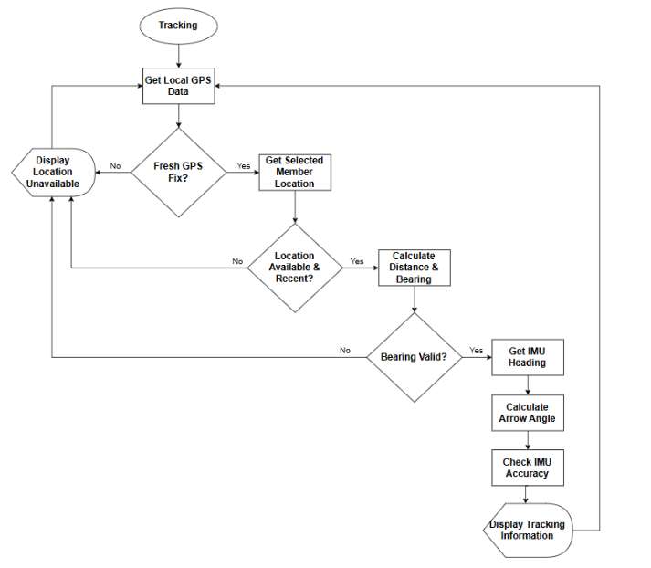
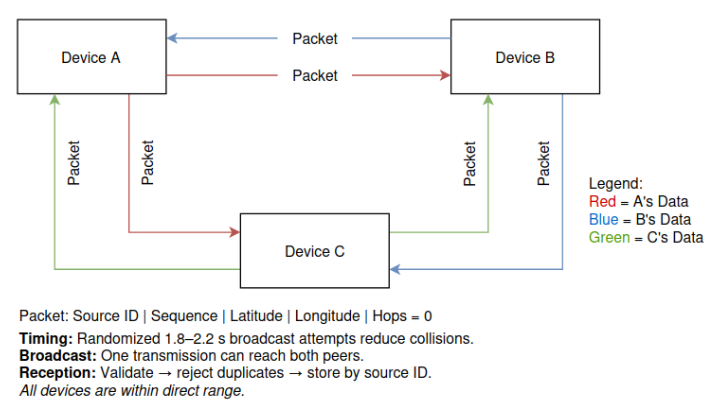
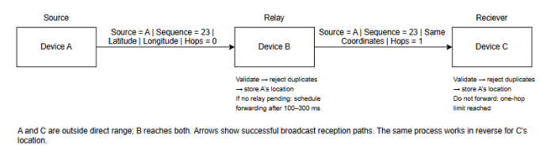

Electrical & Computer Engineering Student

Designed and built a portable, three-device embedded system that allows group members to locate one another without cellular service or internet access. Each device integrates a microcontroller, GNSS receiver, LoRa transceiver, IMU, OLED display, rotary encoder, and rechargeable LiPo battery. The microcontroller communicates with the GNSS receiver and LoRa transceiver over UART and with the IMU and OLED over I²C.
Devices periodically exchange GNSS coordinates over LoRa and calculate the distance and direction to a selected group member. The OLED interface displays this information using an IMU-based directional arrow. The system also supports one-hop relaying, allowing an intermediate device to forward location packets when direct communication is unavailable.



Team responsibilities: My teammate, Sebastian Kolczynski, focused on GNSS integration and position processing, distance and bearing calculations, and direct LoRa communication. System integration and verification were team efforts.
The firmware was developed in C++ using the Arduino framework and PlatformIO. A finite state machine (FSM) manages device operation, beginning with component initialization and error handling. After successful initialization, the device displays a startup screen before allowing users to select a group member and enter tracking mode. If location data becomes unavailable or outdated, the device transitions to a Location Unavailable state and automatically resumes tracking when valid data is restored. The rotary encoder provides navigation between the member list and tracking interface.

During tracking, the firmware verifies that both the local GNSS position and selected group member's location are valid and recent. If either is unavailable, the device displays a Location Unavailable screen. Otherwise, it calculates the distance and bearing to the selected member, then combines the bearing with the IMU heading to determine the relative arrow angle. The firmware also checks IMU accuracy before displaying the tracking information. This process repeats continuously to provide updated distance and direction feedback.

Each device broadcasts location packets containing its device ID, sequence number, GNSS coordinates, and hop count at randomized intervals of 1.8–2.2 seconds to reduce packet collisions. Receiving devices validate incoming packets, reject duplicates, and store location data by source device ID. When direct communication is unavailable, one-hop relaying allows an intermediate device to forward packets after a randomized 100–300 ms delay. Relayed packets preserve the original source information while incrementing the hop count, and packets with a hop count of one are not forwarded again.


Unit, integration, and acceptance tests evaluated sensor functionality, inter-device communication, user interaction, and measurable engineering requirements.
| Test / Requirement | Verified Result |
|---|---|
| Distance accuracy (≥50 m, open sky) | Errors of 1.4 m and 0.3 m; within ±10 m requirement |
| Direction accuracy (≥50 m, open sky) | Errors of 2°, 4°, and 7.4°; within ±12° requirement |
| Three-device operation and one-hop relaying | Demonstrated with correct source identification |
| Communication range | Successful at 958 m; 1 km requirement partially verified |
| Battery-powered operation | More than 24 hours without recharging |
| Size and weight | 174 g; 90 × 70 × 49 mm — within specified limits |
The system met all engineering requirements except the 1 km communication range target, with a maximum demonstrated range of 958 m. Verification testing confirmed accurate distance and direction tracking, reliable three-device operation, one-hop relaying, and over 24 hours of battery-powered operation.
This project strengthened my skills in embedded C++ development, peripheral integration, finite state machines, wireless communication protocols, and hardware debugging. Working through system integration and verification also provided practical experience developing and testing a complete embedded system against engineering requirements.